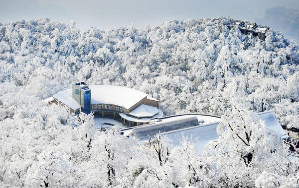
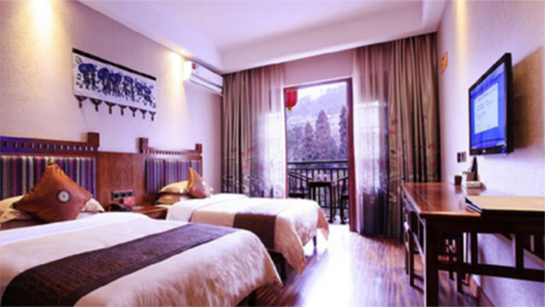
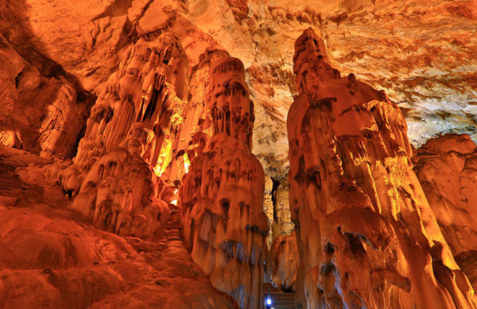
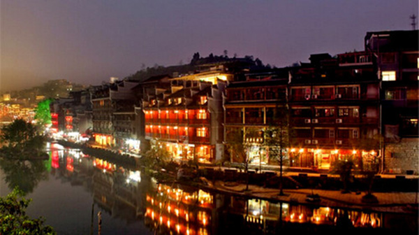
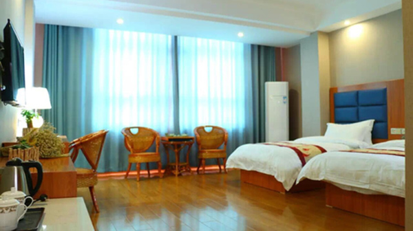

◢峡里谁知有人事，世中遥望空云山。
甭管仙侣还是奇侠，亘古自然是流连忘返了，然，大家好，我是光光Toby，本期带你走入张家界的奇幻处纯净之旅，体验三天两夜沉醉式天门山、黄空洞及入住森林度假碧桂园。
◢【行程目录】
前言
DAY1:雨雾天门山、不惧高不畏寒
DAY2:情迷黄龙洞、溶洞也矫情DAY3:森林碧桂园、沉浸式度假
◢【前言】
所谓出行，自然是“食宿行情”，吃什么？住哪里？去哪儿玩儿？啥心境？
2016年7月，深圳往返张家界的航班，晨夜各一班，少得可怜却也充满期待，航班自然是如约而至的延误了一个多小时，于是在机场先用手机留下下图，以此为念。
“我生活在妙不可言的等待中，等待随便哪种未来”
◢【摄影器材】
一个5D机身和三个镜头，行走张家界
◢【小事记】飞机降落张家界荷花机场已经是半夜的事情了，天空飘着蒙蒙细雨，酒店来车接机，心中暖暖的很窝心。
◢【入住】张家界碧桂园凤凰酒店的豪华山景房
◇入住理由：山景房是600大刀~ 园景房就400多，差距不大，在携程网逛了好久才决定下来，因为作为一个广东人知道碧桂园是粤式品牌，也主打服务，在张家界住的舒服享受好服务，且森林酒店里设施配套齐全（PS:价格淡旺季不同，建议提前预定机票时一起了解）。

◢【餐饮】酒店中餐厅、西餐厅；武陵源汽车站附近
◇选择理由：就近便利原则，在酒店时就在酒店吃，酒店的西餐厅供应早餐和正餐，中餐厅供应正餐；那天从黄龙洞回来已经是中午2点了，所以就在武陵源汽车站内的美食街吃，不错。
◢【景区门票】
★天门山国家森林公园是 235元（含索道、环保车费用、保险）；
◇天门山游玩建议：提前查好天气哟，避免雨天和大雾天（反正我不喜欢），因为下雨没法玩、大雾你走个玻璃栈道和看怪石山林一片白茫茫也是徒劳。
★武陵源·黄龙洞是 95元（含洞内游船）游黄龙洞内耗时2小时哈；
◇黄龙洞游玩建议：带多一件风衣外套，因为洞内比较凉，值得去的理由时黄龙洞是溶洞，自然石乳奇观多，不管外面刮风还是下雨，也不影响洞内观赏哈。
【DAY1】雨雾天门山、不惧高不畏寒
◢天门山美誉海内外，位于市区永定区，得名于天门洞的自然奇观，而天门洞的形成是自机缘巧合的山体坍塌使上部洞开一门，自此南北相同，形成洞口。（手工打字不容易，请给给五星好评）
◇游玩建议：天门山的好有很多，唯一不好的是排队乘缆车的时间太久，平均1~2小时不等，因此建议要么避开节假日、要么就早上早点抵达哟！
◢由于前日夜里半夜才抵达酒店，所以第二天我是吃完午饭才让酒店的车送我到天门山的，到天门山时已经是中午1点多了，然后排队我就拍了1个多小时~简直崩溃的可以可以的哈。
天门山索道排队有几个规律：1.大的节假日2.周末3.8-11点早高峰
◢【景区公交站台】天门山索道站
旺季开放时间：8:00-18:00【旺季(3月-11月),16:30停止出票】
天门山游览分为东西两条线，没有什么门，都在同一个地方出发：
东线和西线都有玻璃栈道，东线玻璃栈道位于天门洞上方，在栈道上行走就如同悬浮在天门洞之上。从上面走过，能炼胆。胆小者、恐高症者勿去。
当天我走的是东线，且没办法的是由于前日自然灾害导致天门洞和盘山路关闭，所以无论东西线上下山都是缆车索道方式。
◢在封闭式缆车里时，还没开始起雾和下雨，能见度非常高，我隔着缆车玻璃都可以把地貌山势盘山路拍得清清楚楚，省去航拍器的功夫了！此景简直张家界市的一道天然壁画。
◢天门山，古称云梦山、壶头山、嵩梁山，又名玉屏山。座落在张家界市以南，雄踞在永定区天门山乡与大坪乡之间，与七星山、熊壁岩毗连，距市区仅此10公里，距蜚声海内外的张家界国家森林公园也只有40多公里。
◢天门山山高林密,地表水丰富，因此山中林溪常年流出，不足为奇了。
◢人间仙境天门山石碑
◢我是懒人，因此一般去景区我都是带着“走马观花+摄影”的目的去的，这回倒好，突然下雨起雾，啥都看不见了，除了伸手可见五指~
◢到了玻璃栈道前，工作人员要求穿戴鞋套，这个鞋套是多次使用的但需要你付费借用，并非购买，价格是5元一副，不贵却又感觉是二次收费？（原来我给的门票仅仅是缆车车票而已，我太傻天了……）
◢管你玻璃栈道下是千万深渊，此时此景都起雾了，什么都看不见，换你你还会怕么？哈哈~
◢我没有拍天门洞，因为当天关闭游览了，可惜可惜；
当然各位在网上可以搜索到很多更为详尽关于分景点的信息哈。
◢总结：此山虽有名，但却因自然灾害或天气原因容易导致影响游览，一旦受到影响，安全起见会关闭小部分分景，且你的游览时间就大打折扣了哦！所以出行查天气有关重要哈哈。
PS：问“天气预报可信么？” 答“虽然有时不可信，但你还能信谁呢？”
【DAY2】情迷黄龙洞、溶洞也矫情

◢我比较喜欢黄龙洞的原因在于
1.苗寨风情
2.不惧风雨皆可观赏
3.洞内很凉快（天然空调）
4.可以走路可以游船
5.游玩黄龙洞，外面小卖部的湘西豆干真心好吃，哈哈
◢不大喜欢介绍景点的亘古来龙去脉，但怎么去黄龙洞就必说了，有人会说如果酒店没车安排去黄龙洞咋办呢？
答：不怕！宝宝告诉你，步骤方案简单如下：
1.让酒店电瓶车送到路口（上图）2.到了路口后过到马路对面，等5～15分钟一班次的 武陵源专线中巴（记得招手即停）直达 【武陵源汽车站
3.到了汽车站后过马路对面（即德胜大酒店门口），直接等乘坐 一路公交车 即可直达 “黄龙洞停车场站”（“黄龙洞居委会”下一站即 黄龙洞停车场）。
备注：酒店到黄龙洞 全程30～45分钟，张家界不大，酒店路口前往景区的交通也算便利；值得一提的是酒店路口还有滴滴司机哟，人也都不错，去景区50~80元不等，也不会强迫你，甚至会告诉你怎么更便宜的去到景点，我被这份和蔼的人情征服了，好你一个张家界人，真是友好的可以！
◢抵达景区的公交站台后往里面走，买好票后看路边一直往里面走大概15分钟就可以到达黄龙洞的洞口了。
◢在还没抵达洞口前会经过桥、牌、商业街、苗寨风情水轮等，记得留影哟~
◢黄龙洞亭往里走就可以看到水轮了，走到头就是洞口
◢恭喜你正式入洞[偷笑]，不提黄龙洞的由来还真不行，1983年初，当地村民毛金初组织九个民兵，历经千难万险，终于探明这世界溶洞奇观的真相。
◢洞内分旱洞和水洞，共四层，大洞厅面积12000㎡，可容纳上万人。 现分龙宫、水晶宫、石琴山、天仙水、响水河、迷宫等游览线……莫担心，入洞之前都会由导游统一安排成一队人马一齐进入，导游也会全称带队（中途如想自己游览也是可以的，当然我不建议）
◢洞内的许多分景点命名颇有意思，也理应从石乳的形状、高度、年龄来进行区分了。
整个洞内洞中有洞，洞中有河，石笋、石柱、石钟乳各种洞穴奇观琳琅满目，美不胜收。
◢有人喜欢自然奇观就自然有人不喜欢来这类洞穴。我的喜好也全源自于摄影，能架个三脚架拍拍黄龙洞怡人矫情的各类石形，我自然其乐融融。
据考证大约3.8亿年前，黄龙洞地区是一片汪洋大海，沉积了可溶性强的石灰岩和白云岩层，经过漫长年代开始孕育洞穴，直到6500万年前地壳抬升，出现了干溶洞，然后经岩溶和水流作用，便形成了今日地下奇观。由此可见这里每一条石柱的行成都来之不易！
◢洞内有两处景点提供给游客拍照取照片，一处免费拍取，另一处则收费。
我对这类收费项目抱以开放的心态，自愿原则嘛，蛮好。
工作人员在拍别人，我在拍工作人员拍别人……哈哈
◢那纤陌纵横，如浪起伏的田园风光，相传是龙王爷的“万丘龙田”（下图）。在溶洞里也叫它“流石坝”或“酸田”，它是流水形成的，流石坝的凸出方向即为当时的水流方向。特别有意思，不知道的人直接就忽略这里了。
◢游船后下船的位置景观也是十分不错的，不过可惜很多人都是直接略过，没有拍下。
◢出了黄龙洞就是小卖部，小卖部有我喜欢的湘西豆干哟，好好吃。可以试吃后再购买啦~
◢总结：这就是黄龙洞，历史悠久的自然溶洞，有很多奇形怪状的石乳，也禁止采摘和破坏，小心被劳改哈！（因为有人为了盗取石乳而被判刑劳改的）

【DAY3】森林碧桂园、沉浸式度假
★（住的好心暖）
◢四面环山，园内有水，森林度假，纯净呼吸——我讲的就是碧桂园凤凰酒店。
确定这家酒店，只有两个理由，一是我来自广东，早就知道粤语里“碧桂园给你一个五星级的家”；二是带着家人来到这里，全身心沉浸一天，享受于此。
◢办理客服入住的酒店外围
◢推开房门，这种久违的安闲自得，由心而发。茶几上摆了果盘、像自家一般。
◢书桌上放了香薰、日历、便笺纸笔、电话和台灯，喜欢的是插座带了USB双扣输出，很细微的设备方便了我的度假办公两不误，拉开抽屉发现里面还有一条多功能的充电数据线，好像一切似曾相识。
◢前两次从景区回来都发现置物台上有一张由服务员手写的可爱字迹，讲的是她的嘘寒问暖和贴心准备的小零食及酸奶，让我感动的是那张发现我衣服没地方晾，所以服务员帮我找来了晾衣架并把衣服晾起来晒到阳台的留言条，怎不叫人心暖呢？谢谢你——这位“我的服务员”
◢串门去了隔壁栋朋友的行政套房，装潢风格一致，舒服的让人恋家。
◢这张让我几晚都酣然入梦的床，更是深得我心，一人俩枕头，给大家个小贴士，其中一个枕头可以用来护垫膝下，因为膝下垫枕头，可以减轻腰部压力哟！
◢如图提供给你一个健康的睡眠方式，请笑纳~
◢浴缸与浴品，试想下在山峦叠嶂中来个日光浴是多么的写意
◢这套环保牙具是我喜欢的，因为我不会因为用一次就丢掉，而是用完会记得带回家继续使用，环保理念常伴出行，看来也也是凤凰酒店的目的。
◢风筒和360°多功能双面镜
◢洗漱间和浴室份外整洁，每天回来服务员都会重新整理一次，哈哈~“我的服务员”，想想就想认识认识你，谁叫我们素未谋面呢？
◢多芬三款浴品，用起来的很放心，不像外面有些酒店不舍得花钱而批量采购的一些不知名沐浴用品在浴室内。
◢在床头边上的钟表，无微不至的时间装饰
◢备好的报刊，很有生活气息的细节，及一张意见反馈卡，你要我写点什么好呢？嗯~或许我想说的话你们有必要那么关注我么？哈，还是我的意见真的对你们很重要？如果是的话，我会说的哟。
◢就连厅内的吊扇也那么的矫情~
◢毯子也要叠成猪猪的样子，“我的服务员”你也是够够的手艺，去到哪都可以谋生啦~哈
◢值得一提的是，凤凰酒店还关心我需要怎样的枕头，看来你是知道我有小许颈椎不适，要给我配一个太空记忆棉来助眠护颈咯。
PS：直接拨打前台电话就会给你送来啲~
◢留影一张，准备换衣服下楼下看看，泳池拍一拍~走起！
★（设施随心玩）
◢楼下的生活设施项目很精彩，室内室外游泳池皆有哟，大爱全景玻璃下的阳光椅，这下葛优躺都不怕不舒适了！
◢波浪式的室内泳池天花吊顶，一种水波般的暖意。
◢户外泳池在下午时更受住店客人的欢迎，分儿童池区1.2米和成人池区到1.5米，记得游泳的时候自备泳帽和泳裤哦，而不用担心拖鞋和拭巾，泳池前台会给你手环匙及其用品的。
◢户外来一张小清新的人像迷惑迷惑各位看客先，哈哈~
◢换套衣服解开发筋在泳池边“街拍”也是一种乐趣，适合男女朋友哟~
◢惊喜的是设施楼层还配备了四款娱乐设备，分别是投篮机、枪击游戏、赛车游戏和白色那个是什么鬼我忘记了~因为开机画面太高级导致我玩不懂。
PS：记得在游戏机前台买下游戏币才可以进行游玩哈。
◢来一局赛车，不好意思，跑了个第二名~
◢健身房设备新全，可惜也欣喜的是没几个人是认真下来健身的，所以适合唉健身的你我下来锻炼个一小时。
◢大叔拉了几下就走了~哈哈，虚位以待后来就被我霸占了。
◢健身房有哑铃、仰卧板、跑步机、动感单车、椭圆机及力量训练器等，哑铃我可以提到50kg
◢额外还有儿童游乐室，滑滑梯和泡泡池肯定是小孩们喜欢了。
◢乒乓球室
◢台球室
◢射箭室，好高端也不大想玩怕守拙拉弓歪了就蒙币了。
◢且酒店还单独划了一大间房作为阅览室哦
◢在酒店闲逛时看到了凤凰酒店度假别墅，这里也是适合文艺摄影的地方哟，别墅的住宿价在1000多到2000多之间，面积130至210之间啦。这个数值上网嗖一下都有，easy go！
◢啦啦啦~街拍一张。
◢茂密葱茏的林子沿着小路错落有致地站成路边两侧，翠绿的叶子则在顶端逐渐合围，形成了一个圆拱形的“屋顶”，浓烈的阳光和夏末炙人的热气就这样被隔绝在外了。
◢园内的一些装饰充满童话色彩
◢酒店客房还分为三个区
◢除了别墅及客房，酒店内还有一个大大的会客厅，真是气派十足。

★（凤凰酒店中西结合）
◢这个具有欧式建筑风格的酒店，连长廊都那么宏伟绚丽，碧桂园将欧洲建筑特色与东方自然山水完美糅合，尽显高贵典雅气派。
◢而美观,有诗情画意的凤凰酒店式穹顶，更是栩栩如生的一幅幅画像,而且富有浓烈的“世俗情意”。
◢酒店大堂的休息区，通常会很有很多韩国人到此入住，所以大家来往接送机闲暇时间都会在这里稍做休息。
◢大堂办理入住
◢壁上的大幅壁画，山水天完美和谐的融为一体。
◢这就是碧桂园式的设计，那么充满诗情画意？
★（看的好“闹心”）
◢当然是“热闹”的“闹”了，精彩的小丑表演会请台下的观众上台配合，我一直以为观众是托儿，后来才发现我的猜测有误，人家可是有家人带过来的呢，哈。
◢在进入魔术区前的长廊，是酒店的客房区域，如果找不到随便问一个服务员都会很热心的答复给你。
◢这位是魔术师兼主持人的帅哥，讲中文但口音略带新马台腔，蛮有意思，喜欢和美女互动配合表演系列大变活人之类的魔术
◢比如把美女身首异处……
◢再比如一言不合就要把美女漂浮起来让全场观众目瞪口呆而又不明觉厉。
◢比如把美女从危险箱中救出
◢比如自己作jian自己关进小黑屋呻吟……
反正，他确实很有才就是了
◢这位是新晋小生魔术师，功力也是不错不错的
◢响起熟悉的川剧锦里背景乐，腾空来个一位变脸大师，现场气氛国粹既视感。
◢偶尔来一两个卖萌的小动作，啊哈……
◢这位速度型的魔术师爱玩蛋蛋球球等，我就不透露太多啦
◢变鸽子和彩带的快手魔术师
◢我比较喜欢的一个魔术小场景话剧
◢准备谢幕推出一只大凤凰，一看就是碧桂园的吉祥物了，还是金灿灿的呢
◢魔术环节很多就不一一介绍，漫天雪花飘起真实浪漫的可以了
★（吃的好开心）
◢这篇关于吃的是我第一天从天门山回来的自助西餐晚餐，价格百来块，不贵了。享受环境和各类茶果饮料和餐食。
◢在清新透亮可以看到日落余晖的大堂里享用日式料理
◢各类肉
◢还可以来一份中式面条（自己调的口味就是爽口）
◢意面餐
◢最后来一口可口驱暑的冰淇淋
◢这就是西餐厅的全貌，夜里我还特意下楼拍一张呢，请叫我勤劳的小蜜蜂~我嗡嗡嗡……
★（吃的好养生）
◢中餐厅外围
◢吃过西餐，这里还有提供正宗的各类中餐，这下可以大饱口福了！
我喜欢这里的荞麦茶，更喜欢这里的各类炖汤，请听我娓娓道来。
◢苦瓜排骨汤
这份清热解毒，风味独特的汤品在广东人眼里，自小喝到大，我也是深知且讲究的，苦瓜不能煮太久，否则会变黄且失清香味，而这份汤的火候却恰到好处，大厨功力深厚呀！
◢哈哈，这道菜广东人绝对吃不习惯，因为是特色的地道小吃，分量十足，欢迎评论猜猜叫啥？
◢广东菜心，很合口味呢。
◢金牌蒜香虾，虾肉可口鲜美
◢小炒黄牛肉
黄牛肉补气，性温入脾，有丰富的蛋白质和维生素B1及钙铁，山椒爽口下饭，这道菜简直被我清光了
◢新鲜西瓜汁橙汁，美好的一顿午餐~
◢扑豆角炒藕尖
一道美味的菜系，豆角这类素材可以补肾，大部分人只知道其含有较多的优质蛋白和不饱和脂肪酸（好的脂肪）,莲藕好处更是多多，益血止泻。
◢这道菜的摆盘设计一看就来自于张家界森林公园的天下第一桥——过桥排骨
颇有几分意思，即可观赏又可品尝，妙哉妙哉！
◢炖乳鸽汤，补不补~
◢人多的团队还可包厢哟
◢奇幻处纯净之旅,情迷森林度假区，我已不舍离开，闭眼冥想，修身养性之极佳之地。